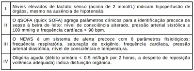
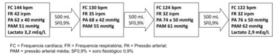

Questão 1 · Quadro clínico · Manejo inicial e pacotes · 4000190490Homem de 34 anos, sem antecedentes mórbidos, trazido ao PS por familiares relatando dois dias de cefaleia holocraniana inicialmente leve, com piora progressiva. Hoje a dor tinha forte intensidade, associada a vômitos e febre medida de 39°C. Ao exame inicial, encontra-se com FC:113bpm; PA:80x62mmHg; FR:18ipm; SpO2:96% em ar ambiente. Exame cardiopulmonar e abdominal sem alterações. Abertura ocular aos chamados, verbaliza por sons incompreensíveis e localiza estímulo doloroso, sem dé cits neurológicos focais. Rigidez nucal presente. A equipe de plantão indicou isolamento respiratório para gotículas e preencheu a noti cação na suspeita, iniciou o protocolo sepse, realizou coleta de líquor e culturas, iniciou expansão volêmica e pesquisa de disfunções orgânicas, além da prescrição de corticoterapia. Assinale a alternativa com as condutas a serem tomadas a seguir.
A Prescrever Vancomicina e Meropenem e suspender o isolamento respiratório após 48 horas do início do tratamento.
B Administrar Ceftriaxone e suspender o isolamento respiratório após 24h do início do tratamento com antibióticos.
C Aguardar resultados de culturas para iniciar antibioticoterapia e suspender o isolamento em 24 horas do início do tratamento guiado.
D Prescrever Ceftriaxone e Ampicilina e manter o paciente em isolamento respiratório até o final do tratamento com antibióticos
Questão 2 · Quadro clínico · Fisiopatologia e alterações inf lamatórias · 4000189233Paciente, 65 anos, sexo masculino, deu entrada na emergência com queixa de febre, calafrios e tosse há quatro dias. Refere que neste período a temperatura axilar chegou a atingir 40o C, apresentou um episódio de vômito, relata diminuição no volume urinário e prostração, recebe o diagnóstico de sepse e disfunção múltipla de órgãos. Diante da conclusão, uma variável inflamatória para o caso é:
A Redução do enchimento capilar.
B Hiperlactatemia.
C Leucocitose (contagem > 12.000/mm³).
D Índice cardíaco acima de 3,5 L/min/m².
Questão 3 · Manejo inicial e pacotes · Choque séptico · 4000188819Sobre a atual definição de sepse e de choque séptico, assinale a alternativa correta.
A Sepse é definida pela presença de infecção, além do qSOFA igual ou maior do que 4.
B Sepse grave é definida pela presença de infecção documentada, além dos critérios de Sirs e de uma disfunção orgânica.
C Choque séptico é definido pela presença de sepse com hipotensão.
D Sepse é definida pela presença de disfunção orgânica ameaçadora à vida secundária a uma resposta desregulada do hospedeiro à infecção.
E Os critérios do qSOFA incluem apenas FC, alteração no estado mental e PAS igual ou menor do que 100mmHg.
Questão 4 · Manejo inicial e pacotes · 4000188497A terapia precoce na sepse grave visa aos seguintes objetivos nas primeiras seis horas, EXCETO:
A Lactato arterial > 4mmol/L
B Pressão venosa central (PVC) 8-12 mmHg
C Pressão arterial média ≥65mmHg
D Saturação venosa central >70%
Questão 5 · Quadro clínico · Sepse · quick SOFA · 4000186094Paciente de 76 anos é admitido em serviço de emergência com quadro de confusão mental, dispneia e rebaixamento do nível de consciência. Fazia uso prévio também de metformina 850mg, uoxetina 20mg e enalapril 10mg a cada 12 horas. Ao exame físico, apresentava-se sonolento, confuso, com 7 pontos na escala de coma de Glasgow. Sua frequência respiratória era de 24ipm, sua frequência cardíaca de 110bpm, seu tempo de enchimento capilar estava de 5 segundos e sua pressão arterial era de 84/54 mmHg. A Radiogra a de tórax do paciente confirma o diagnóstico de pneumonia. Considerando a possibilidade de o paciente apresentar SEPSE, assinale a alternativa CORRETA.
A O quick SOFA não deve ser utilizado como método de triagem, pois não é capaz de determinar prognóstico na sepse.
B A dosagem das hemoculturas deve ser realizada após o início do antimicrobiano.
C As evidências mais atuais apontam que a avaliação do tempo de enchimento capilar é tão eficaz quanto a dosagem de lactato sérico para ser utilizada como parâmetro de ressuscitação inicial na sepse.
D Os pacientes sépticos habitualmente apresentam alto consumo de vitamina C, razão pela qual sua reposição está indicada, demonstrando redução de tempo de hospitalização.
E O padrão ouro para avaliar responsividade volêmica é a variação do diâmetro da veia jugular externa.
Questão 6 · SOFA score · 4000185287Cada uma das alternativas a seguir apresenta um paciente e algumas de suas informações clínicas. Entre essas alternativas, assinale aquela que apresenta o paciente com maior gravidade e provável quadro de sepse.
A mulher de 27 anos de idade, após litotripsia para nefrolitíase, afebril, com FC de 102 bpm e PA igual a 90 mmHg × 40 mmHg, com confusão mental e com contagem de leucócitos igual a 9.000/µL
B homem de 45 anos de idade, com pancreatite, temperatura igual a 38 o C, FC igual a 110 bpm, PA de 110 mmHg × 60 mmHg e contagem de leucócitos igual a 14.000/µL
C mulher de 53 anos, em pós-operatório imediato de ressecção de tumor de cólon, que está taquicárdica e requer intubação orotraqueal
D senhora que reside em casa de repouso, de 84 anos de idade, com cultura de urina positiva para
E homem de 18 anos de idade que apresentou quadro de apendicite gangrenosa, estando agora no pós-operatório imediato de uma apendicectomia laparoscópica, febril (39º C) e taquicárdico (FC = 130 bpm), com PA igual a 140 mmHg × 70 mmHg
Questão 7 · Sepse · 4000183797Segundo as novas diretrizes de SEPSE qual dos critérios abaixo deve ser utilizado como triagem para sepse?
A SOFA
B Quick SOFA
C PERC Score
D NEWS
Questão 8 · Manejo inicial e pacotes · 4000183192Homem, 54 anos de idade, hipertenso, é trazido ao PS com quadro de febre e rebaixamento de nível de consciência. Apresenta dor em flanco direito, disúria e polaciúria há três dias. Exame físico: FC = 120 bpm; PA = 80/40 mmHg; T = 38 ºC; tempo de enchimento capilar = 5 segundos. Exames laboratoriais: hemograma com leucócitos = 19.000 cél/mm³ (desvio à esquerda), creatinina = 2,7mg/dL e lactato arterial = 36mg/dL; urina 1 com leucocitúria, hematúria e presença definitrito. Considerando a hipótese diagnóstica mais provável e as orientações da Campanha de Sobrevivência a Sepse de 2021, qual é a conduta imediata mais adequada?
A Iniciar ceftriaxona e manter por pelo menos 10 dias
B Coletar hemoculturas e urocultura assim que houver estabilidade hemodinâmica.
C Fazer expansão volêmica com cristaloides para atingir 30mL/Kg nas primeiras 3 horas.
D Administrar noradrenalina em dose inicial 0,1 mcg/kg/min.
Questão 9 · Critérios de SIRS · Def inição · Sepse · 4000183181Sepse é definida pela presença de disfunção orgânica ameaçadora a vida, decorrente da resposta desregulada do organismo frente a um processo infeccioso. Em relação aos critérios atuais para o diagnóstico de sepse, marque a assertiva correta:
A Um dos critérios diagnósticos de sepse é a identificação da disfunção orgânica por meio do
B A presença de disfunção em um único órgão ou sistema, mesmo que na suspeita de infecção, não fecha critério para o diagnóstico de sepse.
C O escore SOFA não deve ser utilizado em pacientes com disfunção orgânica prévia, devendo-se utilizar os critérios de síndrome de resposta inflamatória sistêmica.
D O critério operacional para definição de disfunção orgânica é a variação de dois pontos no escore SOFA, que leva em conta a disfunção respiratória, hematológica, hepática, cardiovascular, neurológica e renal.
Questão 10 · Inf ectologia · 4000182754Sobre as definições usadas para descrever a condição de pacientes sépticos, analisar os itens abaixo: I. Bacteremia é a presença de bactérias no sangue, evidenciada clinicamente por febre com calafrios, sem a necessidade de comprovação por hemocultura. II. Critério de choque séptico inclui sepse mais a necessidade de terapia de vasopressor para elevar a média da pressão arterial para maior ou igual a 65mmHg e ácido lático maior que 2mmol/L apesar da ressuscitação volêmica adequada. III. Sepse corresponde à resposta sistêmica do hospedeiro a uma infecção comprovada ou suspeita, mais algum grau de disfunção orgânica. Está(ão) CORRETO(S):
A Somente o item I.
B Somente os itens I e III.
C Somente os itens II e III.
D Somente os itens I e II.
Questão 11 · Critérios de SIRS · Def inição e classif icação · 4000191268Sobre as recomendações do protocolo da Surviving Sepsis Campaign pediátrica quanto ao início da antibioticoterapia, assinale a alternativa correta.
A Até 1 hora após o reconhecimento da sepse.
B Até 3 horas após o reconhecimento do quadro de choque séptico.
C Até 1 hora após o reconhecimento do quadro de choque séptico.
D Até 6 horas após o reconhecimento do quadro da sepse.
Questão 12 · SOFA score · quick SOFA · 4000189980A respeito dos métodos de triagem de sepse no departamento de emergência, as recomendações da Surviving Sepsis Campaing de 2021 são:
A introdução do quick SOFA como principal ferramenta de triagem.
B o uso da ferramenta SOFA como método simultâneo de triagem e diagnóstico.
C a substituição gradual da classificação SIRS pelo quick SOFA.
D a substituição gradual da ferramenta quick SOFA pela NEWS.
E ausência de superioridade do escore quick SOFA em relação ao NEWS.
Questão 13 · Manejo inicial e pacotes · Inf ectologia · SOFA score · 4000177578Sepse é uma síndrome clínica resultante de uma resposta desregulada à infecção, que ocasiona disfunção orgânica e está associada à elevada morbimortalidade nos hospitais. O diagnóstico, para orientar prontamente o tratamento baseado em evidência e reduzir a mortalidade precoce da sepse, é um desa o na prática clínica. Na ausência de um teste diagnóstico padrão, o clínico pode utilizar diversos recursos para a tomada de decisão. Em relação a esses recursos, considere as afirmações abaixo. Das afirmações, estão corretas

A II e IV.
B I e IV.
C I e III.
D II e III.
Questão 14 · Quadro clínico · Manejo inicial e pacotes · Critérios de SIRS · 4000175912Paciente de 22 anos da entrada no pronto socorro devido a episódios importantes de diarreia e febre, iniciados há 05 dias. Ao exame você percebe que ele está desidratado e sonolento. Os acompanhantes negam que paciente faça uso de medicações ou tenha comorbidades. Ao exame físico: REG, sonolento, Glasgow 11 (O3V3M5), desidratado IV+/IV+, pele fria. Taquicárdico, ausculta cardíaca em sopros. FC: 138 bpm e PA: 70 × 40 mmHg. Ausculta pulmonar sem achados. Taquipneico, FR: 27 irpm e saturação de 98% em ar ambiente. Abdome plano, normotenso, ruídos hiperativos e sem dor a palpação. Exames laboratoriais: hemograma com leucocitose, neutro lia, desvio à esquerda e presença de granulações tóxicas. Contagem de plaquetas e coagulograma normais. Cr 2,8mg/dL e U 95 mg/dL. Na+ 148 mEq/L, K+ 3,0 mEq/L. Cl −120 mEq/L (VR 90-110 mEq/L). Albumina 4g/dL. Lactato 18 mg/dL (VR 18 mg/dL). Gasometria arterial: pH 7,0; HCO₃ de 5 mEq/L; pCO2 28 mmHg. Neste caso é CORRETO AFIRMAR que:
A Há critérios para sepse segundo o estudo sepsis 3. Deve-se realizar expansão volêmica com cristaloides balanceados; coleta de culturas; antibioticoterapia precoce.
B Não há critérios para sepse segundo o estudo sepsis 3. Deve-se realizar expansão volêmica com cristaloides balanceados; coleta de culturas e antibioticoterapia precoce.
C Há critérios para choque séptico segundo o estudo sepsis 3. Deve-se realizar noradrenalina em acesso venoso periférico; coleta de culturas; antibioticoterapia precoce.
D Nenhuma das anteriores.
Questão 15 · Manejo inicial e pacotes · 4000168167Sobre a antibioticoterapia e a sepse abdominal, analise as afirmativas a seguir. I. Os antibióticos são administrados para prevenir disseminação da infecção e evitar complicações tardias. II. A obtenção do controle do foco infeccioso associada à antibioticoterapia adequada não altera o prognóstico. III. O aumento da mortalidade está associado com o uso inapropriado inicial de antibióticos e não é reversível pela mudança posterior do agente antimicrobiano. Estão corretas as afirmativas
A I e II, apenas.
B I e III, apenas.
C II e III, apenas.
D I, II e III.
Questão 16 · Inf ectologia · Def inição · 4000163457Paciente de 68 anos, sexo feminino, com histórico de hipertensão e diabetes, procura a emergência por quadro de diarreia aquosa, com cerca de 10 episódios por dia, associada a náusea, vômitos e dor abdominal. Relata início dos sintomas há cinco dias.Ao exame físico: sinais de depleção do espaço extracelular, lúcida, Glasgow 15, pressão arterial de 80/40 mmHg, frequência cardíaca de 120 bpm, temperatura de 35,6 ºC, saturação de 92% em ar ambiente. Tempo de enchimento capilar prolongado, pulsos radiais nos, extremidades frias e pegajosas. Abdome: dor leve à palpação difusa, sem sinais de irritação peritoneal ou distensão. Ausculta pulmonar e cardíaca sem peculiaridades. Gasometria arterial em ar ambiente: pH 7,26, pCO₂: 23 mmHg, Bic 10 mEq/L, pO₂: 70 mmHg, SpO₂: 92%, lactato 4 mmol/L, Na mEq/L. Nenhuma terapia foi instituída até o momento. Segundo as definições atuais de sepse (SEPSIS-3), qual é a definição correta para o caso clínico apresentado?
A Infecção não complicada.
B Sepse.
C Sepse grave.
D Choque séptico.
E Choque séptico refratário.
Questão 17 · Sepse · 4000129511Mulher de 52 anos tem história de 3 dias de febre elevada com calafrios, lombalgia à esquerda, vômitos e mal-estar geral. Na manhã de hoje, associaram-se sonolência, palidez cutâneo-mucosa acentuada e sudorese. Dá entrada no pronto- socorro (PS) com Glasgow 10, extremidades frias e pele de aspecto mosqueado. Pressão arterial (PA) = 70 x 40 mmHg, frequência cardíaca = 130 bpm, frequência respiratória = 28 irpm, pulso filiforme e má perfusão periférica. Soro fisiológico 30 mL/Kg é rapidamente administrado por dois acessos periféricos. Após 20 minutos, a PA se encontra em 74 x 40 mmHg. Qual o principal parâmetro a ser monitorado, prioritariamente, na primeira hora da chegada desta paciente ao PS?
A Lactato arterial.
B Débito urinário.
C Glicemia plasmática.
D Pressão venosa central.
Questão 18 · Antibacterianos · Sepse · Inf ecção do trato urinário ITU · 4000110318Mulher de 33 anos, sem patologias prévias, procura o setor de emergência por febre há 2 dias, associada a disúria e dor lombar à direita, de forte intensidade, sem irradiação. Ao exame físico de entrada apresentava-se em mau estado geral, corada, desidratada, temperatura axilar de 39,2ºC, pressão arterial de 82 x 46 mmHg, relatando peso de 60 kg. Ritmo cardíaco regular em 2 tempos, sem sopros, frequência cardíaca 118 batimentos por minuto. Aparelho respiratório sem alterações. Abdome ácido, com ruídos hidroaéreos presentes, punho- -percussão dolorosa à direita. Sem alterações ao exame físico neurológico. Exames demonstraram: Hemoglobina 11,2 g/dL (referência:12-16), hematócrito 33% (referência: 35-45), plaquetas 52.000/mm³ (referência: 150.000-400.000) Leucócitos 18.000/mm³ (referência: 4.000-11.000) com aumento de células jovens. Apresentava ainda creatinina 2,3 mg/dL (referência: 0,7-1,2) e ureia 88 mg/dL (referência 10-50). Baseado na principal hipótese diagnóstica, qual a conduta inicial?
A Hemoculturas em até 3 horas da admissão, urocultura, ciprofloxacina, 1000 mL de soro fisiológico em 3 horas e 6 concentrados de plaquetas.
B Hemoculturas e urocultura imediatamente, 1800 mL de soro fisiológico em 3 horas e ceftriaxona na primeira hora.
C Ceftriaxona intravenoso na primeira hora, hemoculturas e urocultura nas primeiras 2 horas, 1200 mL de soro ringer lactato na primeira hora.
D Hemoculturas e urocultura imediatamente, 6 concentrados de plaquetas, 1800 mL de soro fisiológico e ceftriaxona endovenosa.
E Hemoculturas e urocultura em até 1 hora da admissão, noradrenalina, amicacina endovenosa.
Questão 19 · Manejo inicial e pacotes · Def inição · Choque séptico · 4000076569Qual dos itens abaixo está em DESACORDO com as Diretrizes Internacionais para o Manejo de Sepse e Choque Séptico: Suporte Hemodinâmico e Terapia adjunta?
A Reanimação por fluídos usando cristaloides ou coloides.
B Manter a pressão arterial média ≥ 65 mmHg.
C Norepinefrina e dopamina administradas centralmente são os vasopressores iniciais de escolha.
D Não usar a dobutamina em pacientes com disfunção do miocárdio à medida que for suportado pelas pressões de enchimento cardíaco elevada e baixos débitos cardíacos.
E A hidrocortisona é preferida à dexametasona.
Questão 23 · Manejo inicial e pacotes · 4000062786Paciente de 19 anos procura atendimento por quadro de tosse produtiva, febre e cansaço. À admissão, encontrava-se hipocorado, com pele pegajosa, enchimento capilar lenti cado, taquicárdico (FC 121 bpm), taquipneico (FR 34irpm), normotenso (PA 114x68mmHg). Ausculta diminuída em terço superior esquerdo. Laboratório com 21400 leucócitos, sendo 10% de bastões, 68.000 plaquetas, Hb 8,6, pH 7,26, anúria, glicemia capilar 186.Assinale a alternativa que contém o alvo hemodinâmico mais adequado para ele:
A SvO2 70%
B PAM 60mmHg
C PVC 6mmHg
D ScvO2 70%
Revisar: possível letra faltando em enunciado
Questão 24 · Critérios de SIRS · 4000061799Faz parte dos sintomas da Síndrome da Resposta Inflamatória Sistêmica (SIRS):
A Temperatura central < 36°C ou > 38°C e bradicardia.
B PaCO2 > 32mmHg e leucocitose maior que 12.000cel.mm³.
C Coagulação intravascular sistêmica e FC acima de 110bpm.
D Taquipneia maior que 20irpm e leucograma < 4.000cel.mm³.
Questão 25 · Quadro clínico · Manejo inicial e pacotes · Fisiopatologia e alterações inf lamatórias · 4000034402Mulher de 45 anos foi internada em UTI devido a quadro de choque séptico de provável foco abdominal. Encontra-se intubada sob ventilação mecânica, com fração inspirada de O₂ de 0,9. Dentre as alternativas abaixo, a PRIMEIRA MEDIDA a ser adotada é a administração de:
A coloide para expansão volêmica.
B corticosteroide.
C esquema antimicrobiano.
D noradrenalina e vasopressina.
Questão 26 · Manejo inicial e pacotes · Fisiopatologia e alterações inf lamatórias · 4000022838Homem de 78 anos, internado para tratamento de infecção do trato urinário há 2 dias com ceftriaxone, evolui com rebaixamento do nível de consciência e hipotensão. Ao exame REG: Tax 38,3°C; FC: 130 bpm, PA: 80 x 54 mmHg; lenta perfusão capilar. Exames laboratoriais: Hb 12,0 g/dL; GB: 11.400/mm3; plaquetas: 110.000/mm³; creatinina: 1,4 mg/dL; bilirrubinas: 1,2 mg/dL. Considerando a gravidade da sepse, faz parte da conduta apropriada nas primeiras 24 horas:
A ampliar espectro dos antibióticos dentro de 6 horas.
B coletar hemoculturas após modificação de antimicrobianos.
C repor volemia precocemente com até 20mL/kg de cristaloides.
D Solicitar lactato e acompanhar o nível sérico para avaliar perfusão.
E usar vasopressores simultaneamente ao volume inicial.
Questão 27 · quick SOFA · 4000010717Um paciente de 72 anos de idade, diabético, foi admitido no departamento de emergência sonolento, hipoativo, taquipneico e febril. Familiares informaram tosse produtiva e hiporexia há quatro dias. Os sinais vitais aferidos no atendimento inicial mostraram pressão arterial de 70/40 mmHg, frequência cardíaca de 126 batimentos por minuto, frequência respiratória de 28 incursões por minuto, saturação periférica de oxigênio de 81% em ar ambiente, temperatura axilar de 39,1 ºC e glicemia de 168 mg/dL. Ao exame físico, o paciente pontuava 6 na escala de coma de Glasgow, suas pupilas estavam isocóricas e fotorreagentes e a ausculta pulmonar era rude, com crepitações predominantes em base pulmonar direita. O hemograma evidenciou leucocitose (21.000 leucócitos), com 14% de bastões. Com base nesse caso hipotético e nos conceitos médicos a ele associados, julgue o item a seguir. O paciente pontua 2 no escore quick SOFA, o que confirma o diagnóstico de sepse.
A Certo.
B Errado.
Questão 28 · Critérios de SIRS · 4000006560Hipotermia, taquicardia, taquipneia, leucocitose ou leucopenia. Quando pelo menos duas destas alterações estão presentes, caracteriza-se a chamada:
A Síndrome metabólica
B Síndrome da resposta inflamatória sistêmica
C Síndrome do choque tóxico
D Síndrome hellp
Questão 29 · Manejo inicial e pacotes · 4000002860Paciente de 33 anos é admitido com sinais de choque séptico de foco urinário por litíase obstrutiva em rim direito. Sobre o tratamento a ser instituído, assinale a correta:
A A reposição volêmica deve ser feita com colóides
B A antibioticoterapia idealmente deve ser guiada por cultura
C O vasopressor ideal no momento é a dopamina
D As variáveis hemodinâmicas são fundamentais para o sucesso do tratamento
Questão 30 · Manejo inicial e pacotes · 4000120482Homem de 45 anos, com quadro de sepse de foco pulmonar, apresentou PA 70 x 40 mmHg. Após expansão volêmica, com 30 mL/kg de soro siológico, apresenta PA de 80 x 40 mmHg. Além de iniciar antibioticoterapia e colher culturas, os próximos passos serão:
A noradrenalina para manter PAM ≥ 65 mmHg; reavaliar lactato sérico se dosagem inicial for maior que 2 mmol/L.
B noradrenalina para manter PAM ≥ 65 mmHg e dobutamina se saturação venosa central for menor que 70%; reavaliar lactato sérico.
C noradrenalina e vasopressina para manter PAM ≥ 65 mmHg; monitorar pressão venosa central e débito urinário.
D manter expansão volêmica e iniciar noradrenalina apenas se não houver elevação da PA após 6 horas; monitorar débito urinário e saturação venosa central.
Questão 31 · Def inição · quick SOFA · 4000085747Considere os cenários clínicos abaixo. I - Paciente de 70 anos veio à Emergência por distensão abdominal, náuseas e vômitos, quadro com 3 dias de evolução, tendo como histórico retossigmoidectomia por diverticulite há 10 anos. Encontrava-se lúcido e orientado e referiu desconforto abdominal. O exame físico revelou cicatriz abdominal mediana, ausência de ruídos hidroaéreos e hipertimpanismo abdominal. A avaliação dos sinais vitais indicou temperatura axilar de 37,8° C, frequência cardíaca de 110 bpm, frequência respiratória de 20 mpm, oximetria de pulso de 95% com oxigênio suplementar de 2 l/min, pressão arterial de 130/70 mmHg sem uso de fármacos vasoativos e tempo de enchimento capilar de 3 segundos. II - Paciente de 29 anos, com história de transplante renal há 1 ano, foi trazida à Emergência por dor pélvica, disúria e febre, quadro com 2 dias de evolução. Apresentava agitação psicomotora, apesar de estar lúcida e orientada. O exame físico foi inexpressivo, a não ser por cicatriz em hipogástrio e fístula arteriovenosa sem frêmito. Evoluiu com disfunção ventilatória e hipotensão, havendo necessidade de instalação de ventilação mecânica invasiva e ressuscitação volêmica. A avaliação dos sinais vitais após o manejo inicial indicou temperatura axilar de 37° C, frequência cardíaca de 120 bpm, frequência respiratória de 18 mpm, oximetria de pulso de 95% com FiO₂ de 0,35, pressão arterial de 100/70 mmHg sem uso de fármacos vasoativos e tempo de enchimento capilar de 3 segundos. III - Paciente de 18 anos veio à Emergência por odinofagia, febre e calafrios, quadro com 24 horas de evolução. Previamente hígida, encontrava-se lúcida e orientada. O exame físico revelou apenas adenomegalias cervicais. A avaliação dos sinais vitais indicou temperatura axilar de 38,7° C, frequência cardíaca de 130 bpm, frequência respiratória de 22 mpm, oximetria de pulso de 99% em ar ambiente, pressão arterial de 100/60 mmHg sem uso de fármacos vasoativos e tempo de enchimento capilar de 2 segundos. Quais deles preenchem os critérios de sepse segundo as definições atuais dos Surviving Sepsis Guidelines (2017)?
A Apenas I.
B Apenas II.
C Apenas III.
D Apenas I e III.
E I, II e III.
Questão 32 · Def inição · Choque séptico · 4000080370Paciente de 80 anos deu entrada no pronto socorro com história de tosse produtiva há 3 dias evoluindo com febre e dispneia. Ao exame físico, apresenta estertores crepitantes bibasais, ausculta cardíaca normal, membros mal perfundidos com pulsos presentes. Regular estado geral, dispnéico, sudoréico, corado e hidratado. PA:80x60 mmHg refratário à hidratação inicial, FC:130bpm e SatO2: 85% em ar ambiente. A hipótese diagnóstica é
A Choque séptico pulmonar.
B Asma exacerbada.
C Infarto agudo do miocárdio.
D Dissecção de aorta
Questão 33 · Manejo inicial e pacotes · 4000067720Homem, 70 anos, tabagista, está há 3 dias com febre e tosse produtiva. No exame físico, está sonolento, com roncos e estertores no pulmão direito, enchimento capilar de seis segundos, pressão arterial = 90 x 40 mmHg, FC - 110 bpm, FR = 34 irpm e oximetria = 85% em ar ambiente. Na história pregressa, houve três exacerbações no último ano, com internação em enfermaria há dois meses. Sobre as condições ventilatórias hemodinâmicas, marque a afirmativa verdadeira.
A Há indicação de cristaloide 20 ml/kg e início do antibiótico em uma hora.
B É preferível o início imediato de aminas para evitar piora do padrão respiratório com excesso de volume.
C Deve-se considerar inotrópico associado, pois há sinais de baixo débito e má perfusão.
D Deve-se considerar a ventilação não-invasiva (VNI) como método de escolha para suporte ventilatório e oxigenioterapia.
E Há indicação para início de corticoide com hidrocortisona 100 mg 8/8h ou prednisona 4 mg/dia.
Questão 34 · Manejo inicial e pacotes · 4000060610Mulher, 55 anos de idade, atendida no setor de emergência com queixas de, há 1 dia, início de tosse, mialgia e febre alta. Hoje, apresentando sonolência e fraqueza. Tem diabetes mellitus há 10 anos, em tratamento regular com bom controle. Ao exame físico, apresenta-se orientada, corada, anictérica. FR = 24 irpm; FC = 98 bpm; TC = 38,8°C; PA = 90 x 50 mmHg; necessita oxigenoterapia com cateter nasal 5 L/minuto para manter oximetria de pulso = 92%. Assinale a alternativa que apresenta a sequência CORRETA do manejo inicial do caso descrito.
A Administrar antimicrobianos de largo *espectro e iniciar vasopressores na primeira hora e, a seguir, iniciar hidrocortisona em baixas doses e coletar exames (lactato e culturas).
B Administrar antimicrobianos de largo espectro, fazer um bolus de solução coloide de 30 ml/kg de peso na primeira hora e coleta de exames (lactato e culturas) posteriormente.
C Iniciar vasopressores e inotrópicos e administrar antimicrobianos de largo espectro na primeira hora e, a seguir, fazer bolus de solução cristaloide de 30 ml/kg de peso.
D Realizar coleta de exames (lactato e culturas), administrar antimicrobianos de largo espectro e fazer um bolus de solução cristaloide de 30 ml/kg de peso na primeira hora.
E Realizar coleta de exames (lactato e culturas) e administrar antimicrobianos de largo espectro na primeira hora e, a seguir, iniciar vasopressores e inotrópicos.
Questão 35 · quick SOFA · 4000048458Pacientes com suspeita de Síndrome Séptica são comuns na prática diária no Hospital ou no Ambulatório. Em 2016, buscando melhorar o diagnóstico da síndrome, os critérios definidores foram atualizados, tendo como base parte dos critérios já conhecidos previamente e utilizados no SOFA (Sequential Organ Failure Assessment), em sua versão simpli cada para maior acessibilidade, chamado de q-SOFA ou quick-SOFA. Assim, a presença de infecção somados 2 ou mais desses critérios apontam para o diagnóstico de sepse. Os critérios propostos na definição atual de sepse, são:
A Frequência respiratória > 22 ipm; Pressão arterial < 100mmHg; Alteração da consciência (Escala de Coma de Glasgow < 15 pontos).
B Temperatura > 38°C ou < 36°C; Frequência cardíaca > 90 bpm; presença de > 10% de bastões no hemograma.
C Frequência cardíaca > 100 bpm; Frequência respiratória > 30 ipm; leucócitos: 12.000 por mm3.
D Alteração da consciência (Escala de Coma de Glasgow < 15 pontos); Frequência respiratória > 20 ipm; Frequência cardíaca > 90 bpm.
E Frequência respiratória > 20 ipm; Pressão arterial < 100mmHg; Frequência cardíaca > 90 bpm.
Questão 36 · quick SOFA · 4000039306C.S.G., 56 anos, internada na enfermaria da Santa Casa há 7 dias em propedêutica de quadro de perda ponderal, adinamia e massa abdominal a esclarecer. Há 1 dia a paciente apresenta piora do estado geral, febre, tosse produtiva e dispneia. Ao exame: REG, hipocorada, febril, anictérica, desidratada, confusa e desorientada no tempo e no espaço (ECG:14). PA: 86 x 60mmHg; FC: 112bpm; FR: 28irpm; satO₂: 92% com CN a 2L/min. AR: MV+ com crepitações nas em base direita, esforço respiratório leve; ACV: RCR em 2T sem sopros. Exames laboratoriais mostram: Hb: 9,2; Ht: 27; Leuc: 18.250; Bt: 15%; seg: 59%; linf: 13%; Plaq: 102.000; Ur: 56; Cr: 1,8; Lac: 4,1 (VR < 2,0); PCR: 241 (VR < 5,0); Gasometria Arterial: pH: 7,18; bic: 12; pCO₂: 26; pO₂: 71; BE: 0; satO₂: 93%. Considerando o caso descrito, assinale a alternativa que apresenta a MELHOR hipótese diagnóstica para o quadro em questão.
A Pneumonia hospitalar sem critérios de sepse.
B Sepse de provável foco pulmonar.
C Choque séptico.
D Tromboembolismo pulmonar.
Questão 37 · Quadro clínico · Manejo inicial e pacotes · 4000038468J.S.C., 44 anos, masculino, diabético tipo 2 há quatro anos. Apresenta quadro de tosse produtiva iniciada há quatro dias. Há dois dias, começou a apresentar febre não aferida, mal-estar geral e dispneia leve. Nesta manhã, passou também a apresentar tonturas e confusão mental, sendo então trazido pelos familiares ao serviço de pronto atendimento de uma UPA em Cuiabá. À admissão, o paciente encontra-se confuso, taquipneico, porém responsivo. Sinais vitais: FR 32 IRPM, FC: 112 bpm, PA: 80x50 mmHg e T: 35,5°C. Glicemia capilar: 290 mg/dL. Ausculta pulmonar revela estertores crepitantes em 1/3 médio e inferior de hemitórax direito. Gasometria arterial mostra pH 7,29; pO₂: 82 mmHg; pCO₂: 25mmHg; Bicarbonato: 12 mEq/L; BE: -8,0. Diante do quadro clínico e das hipóteses diagnósticas mais prováveis, qual é a conduta terapeutica inicial mais adequada?
A Antibioticoterapia de largo espectro e bicarbonato de sódio para corrigir o distúrbio ácido-básico observado
B Antibioticoterapia de largo espectro, hidratação cautelosa (500 mL de cristaloide em três horas) e furosemida IV para reduzir a possibilidade de congestão pulmonar.
C Antibioticoterapia de largo espectro e noreprinefina para elevar a pressão arterial média acima de 85 mmHg.
D Antibioticoterapia de largo espectro e infusão de 30 mL/Kg de cristaloide nas primeiras três horas.
Questão 38 · Pneumonia adquirida na comunidade PAC · Manejo inicial e pacotes · Def inição · 4000021330Mulher de 55 anos com tosse produtiva e secreção purulenta há 5 dias, com febre e dor torácica, é admitida com FC 32 bpm, PA 80/35 mmHg, Glasgow 14, pO2 91 mmHg em ar ambiente. Assinale a melhor opção para o manejo na primeira hora de abordagem.
A Noradrenalina, cristaloide, ceftriaxona, azitromicina.
B Cristaloide, ceftriaxone, azitromicina.
C Noradrenalina, dobutamina, ringer lactato, piperacilina + tazobactam.
D Ringer lactato, noradrenalina, meropenem.
Questão 39 · Def inição · quick SOFA · 4000019282JMS, 56 anos, feminina, com diagnóstico prévio de diabetes mellitus e hipertensão arterial, chega ao pronto-socorro desorientada e agitada, com história de febre há três dias. Ao exame físico a temperatura axilar é de 36,6ºC, frequência cardíaca de 104 bpm, frequência respiratória de 28 ipm, saturação de oxigênio de 92% em ar ambiente, pressão arterial de 100/80 mmHg, enchimento capilar de 4 segundos. Os exames laboratoriais mostraram glicose de 355 mg/dL; creatinina de 3,4 mg/dL; uréia de 85 mg/dL; potássio de 5,6 mEq/L; sódio = 142 mEq/L; leucócitos totais de 13.840/mm³; plaquetas de 128.000; bilirrubina de 1,8 mg/dL. Foi aberto o protocolo de sepse. Observe as alternativas abaixo e responda sobre quais os dados clínicos e/ou laboratoriais justificaram a abertura do protocolo de sepse.
A A abertura do protocolo de sepse foi correta, pois a paciente apresenta história de febre e apresenta disfunção renal.
B A abertura do protocolo de sepse foi precipitada, pois ainda não tinha o resultado de lactato.
C A abertura do protocolo de sepse foi correta, pois a paciente apresenta taquicardia, taquipneia e leucócitos alterados.
D A abertura do protocolo de sepse foi correta, pois a paciente é diabética, teve febre e tem leucocitose.
Questão 40 · Manejo inicial e pacotes · 4000016414Segundo as recomendações de fluidoterapia nos pacientes sépticos, a dose inicial recomendada é:
A 20 ml/kg.
B 10 ml/kg.
C 30 ml/kg.
D 60 ml/kg.
E 50 ml/kg.
Questão 41 · quick SOFA · 4000015552Marque a alternativa correta, de acordo com as diretrizes do SEPSE 3.0, a respeito do qSOFA na abordagem do paciente com sepse:
A O qSOFA determina as disfunções orgânicas durante o algoritmo de diagnóstico de sepse.
B O qSOFA é uma ferramenta de triagem para o diagnóstico de sepse.
C Os três parâmetros que compõem qSOFA são nível pressórico, nível de consciência e frequência cardíaca.
D Paciente com qSOFA < 2 exclui o diagnóstico de sepse.
E Os pacientes que preenchem 2 ou mais critérios no qSOFA têm maior gravidade e, portanto, maior chance de óbito.
Questão 42 · Fisiopatologia e alterações inf lamatórias · 4000006020Sobre as citocinas na resposta inflamatória, é INCORRETO que:
A A citocina TNF-alfa é produzida por monócitos, macrófagos, neutrófilos e células endoteliais.
B As citocinas anti-inflamatórias são uma série de moléculas imunoregulatórias, dentre elas IL-4, IL-6.
C A IL-6 apresenta propriedades pró e anti-inflamatória.
D A IL-18 está diminuída na sepse.
Questão 43 · Manejo inicial e pacotes · 4000005958Em um paciente com diagnóstico de sepse, qual é o momento ideal de se iniciar a antibioticoterapia?
A Após realizar 3 expansões com 25 ml/Kg.
B Após realizar a primeira dose de corticoide.
C Na primeira hora do diagnóstico.
D Após afastar uma infecção viral.
Questão 44 · quick SOFA · 4000004998Em 2016 foi publicado o SEPSIS-3, com a proposta de novas definições para sepse. Um escore sugerido para a identi cação de pacientes com sepse foi o Quick Sequential Organ Failure Assessment (qSOFA). Quais são os componentes deste escore?
A Taquicardia, taquipneia e alteração do nível de consciência.
B Taquipneia, alteração do nível de consciência e febre.
C Taquipneia, hipotensão e febre.
D Hipotensão, febre e alteração do nível de consciência.
E Taquipneia, hipotensão e alteração do nível de consciência.
Questão 45 · Manejo inicial e pacotes · 4000121706A não utilização de antibioticoterapia precoce e correta nas primeiras horas de um quadro de sepse grave acarreta o aumento de mortalidade na ordem de:
A 1% por hora perdida.
B 7% por hora perdida.
C 20% por hora perdida.
D 20% por dia perdido.
E 7% por dia perdido
Questão 46 · Manejo inicial e pacotes · Inf ectologia · 4000120828As medidas associadas com a redução da mortalidade no choque séptico, além da ressuscitação volêmica, são:
A Antibioticoterapia precoce, uso de corticoide, controle glicêmico, uso de agentes vasopressores precocemente.
B Antibioticoterapia na primeira hora de tratamento, controle glicêmico, uso de dopamina e vasopressina, se necessário.
C Antibioticoterapia precoce, uso de imunoglobulina humana, uso de proteína C ativada, uso de agentes vasopressores precocemente.
D Antibioticoterapia na primeira hora de tratamento, controle glicêmico, uso de agentes vasopressores precocemente.
Questão 47 · Nef rologia · quick SOFA · 4000117769Uma paciente de 27 anos de idade, com antecedente de pielonefrite, deu entrada no serviço de emergência discretamente sonolenta, com perfusão lenti cada, FC = 120 bpm; FR = 28 irpm; PA = 80 x 60 mmHg; Giordano positivo e lactato arterial de 4,2 mmol/L. Com base nesse caso hipotético, assinale a alternativa que apresenta a conduta correta no manuseio da paciente segundo o Surviving Sepsis Campaign: International Guidelines for Management of Sepsis and Septic Shock: 2016.
A Deve-se utilizar qSOFA para rastreamento da sepse, iniciar ressuscitação volêmica com cristaloide (pelo menos 30 ml/kg nas primeiras 6h) e iniciar antibiótico após o resultado do hemograma.
B Deve-se utilizar qSOFA para rastreamento da sepse, iniciar ressuscitação volêmica com cristaloide (pelo menos 30 ml/kg nas primeiras 3h) e iniciar antibiótico em até 1h.
C Não se deve utilizar qSOFA para rastreamento da sepse, mas sim iniciar ressuscitação volêmica com cristaloide (pelo menos 30 ml/kg nas primeiras 3h) e antibiótico em até 1h.
D A hidrocortisona deve ser utilizada se a paciente apresentar choque séptico.
E A vasopressina deve ser o vasopressor de primeira escolha se a paciente apresentar choque séptico.
Questão 48 · Manejo inicial e pacotes · 4000101560Paciente, com 32 anos de idade, hígida, deu entrada em serviço de urgência municipal com quadro clínico de febre alta, mialgia, artralgia, cefaleia, prostração, dor retro-orbitária e exantema há 2 dias. Apresentava-se lúcida e orientada. Ao exame físico, constatou-se desidratação, temperatura = 39,5°C, Frequência cardíaca = 102 bpm, Frequência respiratória = 20 irpm e Pressão arterial = 90x60 mmHg. Ausculta cardiopulmonar normal. A avaliação laboratorial mostrou: Hematócrito = 35 %; leucócitos totais = 3.900 /mm3; plaquetas = 102.000 /mm3. Diante do quadro, neste momento, qual a prioridade no manuseio da paciente?
A Solicitar sorologia para dengue.
B Instalar hidratação venosa.
C Prescrever paracetamol para controle da temperatura e analgesia.
D Realizar prova do laço.
Questão 49 · Manejo inicial e pacotes · Choque séptico · 4000070607É droga de primeira escolha para o paciente em choque séptico:
A Vasopressina.
B Noradrenalina.
C Dopamína.
D Epinefrina.
Questão 50 · Manejo inicial e pacotes · 4000066065Em paciente com sepse grave e necessidade de ventilação mecânica, a medida que pode ser dispensada, na abordagem inicial (primeiras 3 a 6 horas), é:
A Manter hematócrito > 30%.
B Iniciar antibiótico em até 1 hora.
C Considerar corticoide para casos de hipotensão refratária a aminas e volume.
D Iniciar ataque com cristaloide 20 a 30 ml/kg.
E Indicar ventilação protetora com 4-6 ml/kg de volume corrente.
Questão 51 · Def inição · 4000055904Considerando as atuais recomendações do SEPSIS 3, assinale a alternativa que apresenta, corretamente, o que é sepse:
A Disfunção orgânica potencialmente fatal causada por uma resposta imune desregulada a uma infecção.
B SIRS com infecção associada.
C Suspeita ou certeza de infecção e um aumento agudo de 2 pontos ou mais no SOFA em resposta a uma infecção.
D Suspeita ou certeza de infecção e um aumento agudo de 2 pontos no SOFA em resposta a uma infecção.
E Suspeita ou certeza de infecção e um aumento agudo de 2 pontos no qSOFA em resposta a uma infecção.
Questão 52 · Manejo inicial e pacotes · 4000055744Sobre as diretrizes atualizadas da ressuscitação hemodinâmica inicial no tratamento da sepse e choque séptico, conhecidas como “Campanha Sobrevivendo à Sepse”, assinale a alternativa correta.
A É recomendada meta de pressão arterial média de 75 mmHg para pacientes em uso de vasopressores.
B Recomenda-se meta de 65% de saturação venosa central de oxigênio como marcador de perfusão tecidual para guiar ressuscitação.
C É recomendada meta de, pelo menos, 18 mmHg de pressão venosa central para guiar reposição volêmica.
D Recomenda-se uso de, pelo menos, 10 mL/kg de fluidos cristaloides nas primeiras três horas para tratar sinais de hipoperfusão.
E Sugere-se a utilização de variáveis dinâmicas para predizer fluido-responsividade sempre que disponível.
Questão 53 · Def inição · quick SOFA · 4000029438De acordo com os critérios de sepse propostos em 2016 pela Sepsis De nition Task Force, QUAL dos pacientes abaixo encontra-se em sepse?
A Adolescente de 16 anos de idade, com dor abdominal em fossa ilíaca direita iniciada há 4 horas, afebril, com PA 90x50mmHg, FR 24rpm, FC 88bpm, hemograma com 11000/mm3 leucócitos e plaquetopenia, e imagem de espessamento do apêndice cecal e densificação de gordura periapendicular à tomografia de abdome.
B Idosa de 75 anos de idade, com rebaixamento do nível de consciência, Glasgow 13, PA: 110 x 70mmHg, FC: 96bpm, FR: 20rpm, hemograma com leucocitose, EAS piúrico.
C Homem de 40 anos de idade com intensa dor abdominal em barra após libação alcoólica, com FR de 22rpm, FC em 96bpm, PA em 160 x 100mmHg, afebril, amilase elevada e tomografia de abdome mostrando leve edema e densificação de gordura peripancreática.
D Trabalhador braçal em pedreira na periferia da cidade, relatando início insidioso de dispneia há 3 meses, com esforço ventilatório leve, FR 26rpm, PA: 170 x 80mmHg, FC 88 bpm, afebril, e radiografia de tórax com infiltrado intersticial bilateral.
E Hepatopata crônico, usuário de betabloqueador e espironolactona, trazido à emergência com rebaixamento do nível de consciência progressivo nos últimos 3 dias, asterixis, PA 100 x 60mmHg, FR de 18rpm, FC de 60bpm e hiperlactatemia discreta.
Questão 54 · Choque séptico · 4000014358Paciente feminina, 56 anos e peso estimado em 50 kg, tem diagnóstico de pielonefrite, em serviço de emergência. Está confusa, letárgica e os sinais vitais são: T = 39,2°C; PA = 62 x 40 mmHg; FC = 144 bpm; FR = 42 irpm; SpO₂ = 95%. Ausculta cardiopulmonar sem alterações e tempo de enchimento capilar normal. Apresenta lactato arterial de 3,2 mEq/L (VR: até 2,0 mEq/L) e Hb de 8,7 g/dl (VR: 11,5-16 g/dl). É submetida à expansão volêmica com soro siológico evoluindo conforme registro abaixo. São colhidas culturas, é administrada primeira dose de antibiótico adequado e a paciente é transferida para UTI mantendo os dados do último registro. Legenda: T – Temperatura; PA – Pressão Arterial; FC – Frequência Cardíaca; bpm – batimentos por minuto; FR – Frequência Respiratória; irpm – incursões respiratórias por minuto; SpO₂ – Saturação de Oxigênio; UTI – Unidade de Terapia Intensiva; VR – Valor de Referência. Qual terapêutica deve ser instituída nesse momento?

A Infusão de noradrenalina.
B Administração de hidrocortisona.
C Expansão com soro fisiológico 0,9%.
D Transfusão de concentrado de hemácias filtrado.
Questão 55 · Def inição · quick SOFA · 4000008569Acerca dos novos critérios de sepse é CORRETO afirmar:
A Que após muitas críticas e dificuldade de aceitação universal, tiveram uma nova revisão em 2017 com o retorno da Síndrome da Resposta Inflamatória Sistêmica (SRIS) como o ponto de alerta inicial da sepse.
B Representaram um grande avanço aumentando a sensibilidade diagnóstica, ao de forma bastante abrangente, incluírem critérios bastante específicos de infecção, praticamente reduzindo a zero a inclusão de pacientes não infectados dentro do diagnóstico de sepse.
C Que apesar de não poderem ser indubitavelmente usados para o diagnóstico preciso de sepse, apresentam maior especificidade que os critérios antigos e podem, por outro lado, com um quickSOFA "maior que" ou = a 2, serem úteis para detecção de pacientes com maior probabilidade de piores desfechos.
D Que definiram o quickSOF A (freqüência respiratória "maior que" 22/min; pressão sistólica "menor que" 100mmHg e o lactato sérico "maior que" 3) como o passo inicial para desencadear a abordagem terapêutica em um possível paciente séptico
E Recebem muitas críticas por reduzir a sensibilidade e a especificidade do diagnóstico da sepse, atendendo principalmente aos interesses das seguradoras de saúde dos países desenvolvidos, uma vez que usaram um escore validado apenas dentro de UTIs, o quickSOFA, em salas de emergência.
Questão 56 · Quadro clínico · Def inição · 4000124988Paciente do sexo feminino, 56 anos, com antecedentes de diabetes mellitus tipo II, há dois dias apresenta febre e disúria. Procura o serviço de emergência devido a sonolência e oligúria. Ao exame físico, encontra-se com PA = 110 x 70 mmHg; FC = 110 bpm; FR = 28 irpm; Glasgow 13. Considerando-se o Terceiro Consenso Internacional de De nições para Sepse e Choque Séptico, o quadro clínico apresentado é de:
A Sepse grave.
B Choque séptico.
C Sepse.
D Síndrome da Resposta Inflamatória Sistêmica (SIRS).
E Sepse com disfunção orgânica.
Questão 57 · SOFA score · 4000119547NÃO é avaliado no escore do SOFA:
A TP(INR).
B Escala de coma de Glasgow.
C Relação PO2/FiO2.
D Valor de bilirrubina.
Questão 58 · Quadro clínico · Def inição · Choque séptico · 4000108436Paciente de 72 anos de idade procura o pronto atendimento com queixa de dor torácica do tipo ventilatório-dependente e dispneia em repouso com 1 dia de evolução. Apresenta história pregressa de hipertensão e diabetes, em uso de enalapril 20 mg de 12 em 12 horas e metformina 850 mg duas vezes ao dia. No exame físico apresenta-se febril, com temperatura de 38,2ºC, com frequência respiratória de 32 irpm, pressão arterial de 80 x 60 mmHg, frequência cardíaca de 104 bpm e com crepitação e base direita na ausculta pulmonar. Seus exames laboratoriais revelaram: eritrócitos = 2,5 milhões/mm³; hemoglobina = 7,5 g/dl; hematócrito = 22%;VCM = 85 ; CHCM = 34 g/dl; reticulócitos: <1%; leucócitos = 18.000/mm³; bastões = 10%; plaquetas = 95.000/mm³; creatinina = 1,6 mg/dl; ureia = 62 mg/dl; sódio = 132 mEq/L; potássio = 5,6 mEq/L; cloreto = 91 mEq/L; glicemia = 145 mg/dl. Gasometria Arterial: PH = 7,25; bicarbonato = 16 mEq/L; PCO2 = 62 mmHg; PO2 = 60 mmHg; SO2 = 88%; lactato = 3,8 mmol/dl. Com base no caso clínico apresentado, analise a assertiva a seguir, marcando CERTO para VERDADEIRO/CORRETO e ERRADO para FALSO/INCORRETO. De acordo com os novos critérios de sepse (SEPSIS-3), o diagnóstico do paciente, caso ele obtivesse uma melhora da pressão arterial após infusão de volume é choque séptico.
A Certo.
B Errado.
Questão 59 · Manejo inicial e pacotes · 4000108086Mulher, 34 anos, com queixa de tosse produtiva há 3 dias, associada a febre e dispneia há 2 dias, procura o Pronto Socorro. Ao exame físico, mau estado geral, desidratada, PA 80 x 60 mmHg. Aparelho respiratório MV+, com estertores nos à esquerda, frequência respiratória de 38. Aparelho cardiovascular - ritmo regular sem sopros, FC 128. Abdome e extremidades sem alterações. Gasometria arterial - pH 7,21 PO2 54 (acima de 60) mmHg PCO2 22 (35-45) mmHg, Bicarbonato 13 (22-26), lactato 3,5 (< 1,0); Restante dos exames em andamento. Qual a conduta?
A Internação em unidade de terapia intensiva, ressuscitação volêmica, antibioticoterapia, considerar ventilação mecânica.
B Aguardar resultados de exames e cultura para definir antibioticoterapia, manter em sala de emergência.
C Encaminhar à enfermaria com antibiótico de largo espectro.
D Encaminhar à enfermaria, aguardar resultados de exames para definição de antibioticoterapia adequada.
E Alta hospitalar com levofloxacina. Reavaliação em 48 horas.
Questão 60 · Tratamento · Manejo inicial e pacotes · 4000098300Homem, 39 anos, admitido no pronto-socorro trazido pelo SAMU. Antecedente pessoal: insu ciência renal crônica secundária à nefropatia diabética. Exame físico: Glasgow = 10; oximetria de pulso (ar ambiente) = 89%; Pressão Arterial Média (PAM) = 45 mmHg; FC = 130 bpm; T = 38,2°C; hiperemia e saída de secreção purulenta em local de inserção de cateter de hemodiálise. Quais as condutas a serem tomadas nas primeiras 3 horas?
A Intubar, iniciar ventilação mecânica, colher gasometria arterial e hemograma, iniciar noradrenalina para atingir PAM de 65 mmHg.
B Dosar lactato sérico, colher hemoculturas, iniciar antibioticoterapia venosa de amplo espectro, infundir 30 ml/kg de solução cristaloide e ofertar oxigênio.
C Intubar, iniciar ventilação mecânica, inserir cateter de artéria pulmonar, colher hemoculturas e iniciar antibioticoterapia de amplo espectro.
D Realizar tomografia de crânio, puncionar veia central, colher hemograma e dosar lactato, infundir 50 ml/kg de solução cristaloide e ofertar oxigênio.
Questão 61 · Manejo inicial e pacotes · 4000093222Assinale a assertiva INCORRETA sobre o tratamento de sepse.
A O material para exames culturais deve ser coletado idealmente antes do início do uso de antibiótico.
B Paciente com empiema deve ser avaliado quanto à necessidade de drenagem torácica após 48 horas de uso de antibiótico.
C A higiene oral com clorexidina pode contribuir para a prevenção de pneumonia associada a ventilação mecânica.
D A antibioticoterapia deve ser instituída em até uma hora após o diagnósitco de sepse.
E A antibiotiocoterapia deve ser reavaliada com base no resultado das culturas, e a substituição de um antibiótico por outro de menor espectro é recomendada sempre que possível. ida oib pr ed
Questão 62 · Def inição · 4000077998Qual dos casos abaixo preenche critérios para sepse?
A Paciente do sexo masculino, 70 anos, tabagista, trazido por familiares para uma UPA, vinha em tratamento domiciliar para “gripe forte” e apresentou quadro de desorientação e febre.
B Paciente do sexo feminino, 68 anos, diabética, submetida à quimioterapia há 10 dias para tratamento de câncer de mama, e que apresentou leucopenia e hiperglicemia em exames laboratoriais.
C Paciente do sexo masculino, 55 anos, com insuficiência renal crônica em tratamento hemodialítico, que apresentou taquipneia e edema de membros inferiores esta noite.
D Paciente do sexo feminino, 25 anos, que procurou UPA por ter apresentado febre, petéquias e plaquetopenia.
E Paciente do sexo masculino, com fixador externo em tíbia, que retorna ao serviço de ortopedia por apresentar secreção purulenta em um dos pontos de fixação.
Questão 63 · Manejo inicial e pacotes · 4000065276Um paciente de 70 anos, em pós-operatório de fratura de fêmur, é diagnosticado com pneumonia. Sua pressão arterial é de 80 x 40 mmHg, frequência cardíaca de 120 bpm e respiratória de 28 irpm. A temperatura axilar é de 38,0°C. A gasometria arterial mostra: pH 7,28; pCO₂ 30 mmHg; pO₂ 55 mmHg; bicarbonato 14 mEq/L; BE -5,0; saturação de oxigênio 86% e lactato 5,0 mmol/L. O tempo ideal para administração do antibiótico é:
A Uma hora.
B Duas horas.
C Três horas.
D Quatro horas.
E Seis horas.
Questão 64 · Manejo inicial e pacotes · Choque séptico · 4000065271Um paciente de 70 anos, em pós-operatório de fratura de fêmur, é diagnosticado com pneumonia. Sua pressão arterial é de 80 x 40 mmHg, frequência cardíaca de 120 bpm e respiratória de 28 irpm. A temperatura axilar é de 38,0°C. A gasometria arterial mostra: pH 7,28; pCO₂ 3 0mmHg; pO₂ 55 mmHg; bicarbonato 14 mEq/L; BE -5,0; saturação de oxigênio 86% e lactato 5,0 mmol/L. A intervenção que deve ser executada a seguir é:
A infusão de bicarbonato de sódio1 mEq/kg.
B intubação traqueal com ventilação mecânica.
C iniciação de dobutamina em infusão contínua.
D iniciação de hidrocortisona 50 mg de 6/6h.
E reposição volêmica com cristaloide 20 a 30 ml/kg.
Questão 65 · Manejo inicial e pacotes · 4000057183Paciente de 10 anos, feminina, dá entrada em pronto atendimento com história de febre há 24 horas. Há 6 horas com sufusões hemorrágicas pelocorpo, e há 3 horas com confusão mental. Após exame físico e história clínica, faz-se a hipótese diagnóstica de choque séptico por meningite meningocócica. O (s) exame (s) que obrigatoriamente deve (m) ser colhido (s) no início do atendimento, por fazer (em) parte do pacote ou <i>bundle</i> de três horas é/são:
A Lactato sérico.
B Hemograma.
C Coagulograma.
D Gasometria arterial.
E Ureia e creatinina.
Questão 66 · Quadro clínico · Manejo inicial e pacotes · Choque séptico · 4000042297Um homem com 38 anos de idade, portador de diabete melito tipo 1 desde os 12 anos, sem tratamento regular de sua doença de base, foi admitido no centro de tratamento intensivo em razão de quadro de sepse grave. Segundo relato de familiar, o paciente iniciou, há cerca de 4 dias, quadro de tosse produtiva e febre alta. Fez uso de sintomáticos (mucolítico e antitérmico) sem obter melhora. Há 24 horas, passou a apresentar diminuição importante do débito urinário e, há 3 horas, prostração e rebaixamento do nível de consciência. O exame físico demonstra temperatura axilar = 38.6ºC; frequência cardíaca = 112 bpm; frequência respiratória = 33 irpm (com tiragem intercostal) e pressão arterial = 68 x 40 mmHg. Solicitados exames complementares de urgência, o hemograma revela 26.000 leucócitos/mm³ (valor de referência: 4.000 a 10.000/mm³) e 16% bastões (valor de referência: 0 a 5%). Diante desse quadro, a conduta inicial apropriada deve ser:
A Colher hemoculturas e iniciar imediatamente ressuscitação volêmica e antibioticoterapia direcionada a germes atípicos com claritromicina.
B Colher hemoculturas e iniciar imediatamente ressuscitação volêmica e antibioticoterapia intravenosa de amplo espectro com ceftriaxona e azitromicina.
C Colher secreção traqueal para bacterioscopia e cultura e solicitar tomografia computadorizada de tórax de alta resolução, para definir esquema antibiótico.
D Colher secreção traqueal para bacterioscopia e cultura e solicitar radiografia de tórax em AP no leito, aguardando resultados para início da antibioticoterapia.
Questão 67 · Def inição · quick SOFA · 4000034323Considerando os novos conceitos de sepse, marque a alternativa INCORRETA:
A Sepse, atualmente, é definida pela presença de uma infecção + escore SOFA "maior ou igual a" a 2.
B Choque séptico é definido com a presença de sepse associada à necessidade de utilização de vasopressores para manter pressão arterial média acima de 65 mmHg + lactato sérico > 2 mmol/L (ou 18 mg/dl).
C quickSOFA é uma ferramenta utilizada para detectar pacientes com maior risco de desfechos adversos.
D Os parâmetros analisados pelo SOFA são: PaO2/FiO2; plaquetas; bilirrubina; pressão arterial; nível de consciência; e função renal.
E Parâmetros avaliados pelo quickSOFA relacionados a mau prognóstico: escala de coma de Glasgow < 13; pressão arterial sistólica < 100 mmHg; e frequência respiratória < 22 irpm.
Questão 68 · Fisiopatologia e alterações inf lamatórias · 4000005148Com relação à SIRS, ao sepse e ao choque séptico, assinale a alternativa CORRETA:
A O choque séptico é caracterizado pelo padrão pró-coagulante, com redução de proteína C e S.
B Na sepse, de forma geral, o tempo de enchimento capilar encontra-se diminuído.
C A pressão arterial pode estar dentro de níveis normais no início do quadro de choque séptico.
D A função cardíaca na sepse, inicialmente, está aumentada.
E O fluxo sanguíneo microvascular só está alterado nos quadros de SIRS.
Questão 69 · Quadro clínico · Critérios de SIRS · Def inição · 4000117625Sobre os critérios para o diagnóstico diferencial entre SIRS, sepse, sepse grave e choque séptico, assinale a alternativa INCORRETA.
A Sepse é quando a Síndrome da Resposta Inflamatória Sistêmica(SIRS) é decorrente de um processo infeccioso comprovado.
B Choque séptico é quando a hipotensão ou hipoperfusão gerada pela sepse é refratária à reanimação volêmica adequada e com necessidade de administração de agentes vasopressores.
C SIRS é uma resposta do organismo a um insulto variado, que pode ser de origem traumática, por pancreatite, grande queimado ou infecção sistêmica. Um quadro de hipotermia < 36ºC com taquicardia > 90 bpm classifica-se como SIRS.
D Sepse grave é quando a sepse está associada a manisfestações de hipoperfusão tecidual e disfunção orgânica, caracterizada por acidose láctica, oligúria ou alteração do nível de consciência, ou hipotensão arterial com pressão sistólica menor do que 90 mmHg e com necessidade de administração de agentes vasopressores.
Questão 70 · Manejo inicial e pacotes · Pielonef rite · 4000114794Mulher, 34 anos, portadora de litíase renal de repetição, com quadro há dois dias de febre alta, dor lombar à direita, náuseas, vômitos e decaimento do estado geral. PA: 80 x 45 mmHg; FC: 120 bpm; FR: 24 irpm; T = 39,8°C; SatPO2 em ar ambiente = 99%. USG realizada no setor de pronto atendimento mostrou dilatação pielocalicial à direita, com cálculo medindo cerca de 8 mm, encravado na Junção Ureteropiélica (JUP). A paciente foi submetida à expansão volêmica, coleta de amostras para hemoculturas e urinocultura e início de antibioticoterapia parenteral com cefotaxima 2 g a cada 8 horas. Após expansão volêmica, a PA ficou em 108 x 80 mmHg. A conduta para esta paciente deverá ser melhorada através:
A Da realização de TC não contrastada de vias urinárias.
B De substituição do antibiótico utilizado por metronidazol.
C Da passagem de cateter ureteral tipo duplo J.
D Do início de noradrenalina em BIC (Bomba de Infusão Contínua).
E Da adição de ciprofloxacino ao antibiótico utilizado.
Questão 71 · Manejo inicial e pacotes · 4000095293Quanto ao tratamento nas 6 primeiras horas de quadro de sepse grave, é CORRETO afirmar que:
A a reposição de volume guiada pelos níveis de pressão venosa central (PV C) é indicada já que esta pressão permite a avaliação fidedigna do volume de enchimento do coração esquerdo.
B no paciente idoso com sepse grave, o volume só pode ser administrado após avaliação da pressão venosa central (PVC).
C o tratamento agressivo nas primeiras 6 horas com aderência ao conjunto de medidas “pacote”, reposição de volume e administração precoce de antibióticos irá influir diretamente na morbimortalidade.
D a administração de Ringer Lactato traz vantagens comprovadas ao paciente politraumatizado.
E a dopamina é o vasopressor de primeira escolha para o tratamento dos quadros de choque.
Questão 72 · Critérios de SIRS · Def inição · 4000081767Na vigência de uma infecção, a sepse ou síndrome da resposta inflamatória sistêmica de origem infecciosa, pode ser diagnosticada com base nas seguintes condições:
A hipotensão (PA sistólica < 90 mmHg) e leucopenia (< 4.000/mm3 )
B hipotensão refratária a reposição volêmica e leucocitose (> 12.000/mm3 )
C hipotermia (< 36°C) e taquipnéia (> 20 irpm)
D oligúria e alteração aguda do nível de consciência.
Questão 73 · Manejo inicial e pacotes · 4000059965Aline, 28 anos, foi admitida no hospital com pielonefrite aguda e tratada com Cipro oxacina oral. Após três dias de terapia, ela retorna ao hospital apresentando febre persistente de 38,9°C e dor em ancos. A cultura de urina revelou 100.000 unidades formadoras de colônia de taquicardia, taquipneia e letargia. Qual será a próxima etapa da avaliação e abordagem? Assinale a alternativa correta:
A Solicitar hemocultura e ampliar o espectro de antimicrobianos.
B Avaliação cirúrgica para analisar a possibilidade de apendicite.
C Acrescentar uma terapia fúngica.
D Obter acesso venoso e administrar líquidos.
E Iniciar a infusão de Noradrenalina.
Questão 74 · Quadro clínico · Pielonef rite · Quadro clínico · 4000008940Paciente feminina, 56 anos de idade, deu entrada no hospital com queixa de mal- estar intenso, dispneia, febre e estrangúria de início há 4 dias. Avaliação inicial demonstra exames que revelaram leucocitose, desvio à esquerda, e exame de urina demonstra piúria maciça. Sinais vitais demonstram FC 130 bpm e PA de 70 x 40 mm Hg. Podemos, assim, concluir que esse caso clínico é de
A Choque séptico de foco urinário.
B Cistite.
C Sepse severa de foco urinário.
D Desidratação moderada.
Questão 75 · Manejo inicial e pacotes · Microbiologia e Antimicrobianos · 4000116435A utilização de antibióticos em pacientes sépticos é indispensável para o tratamento da sepse. Esta terapia permanece crucial para o prognóstico desses pacientes, uma vez que a taxa de mortalidade foi maior em indivíduos que receberam a terapia antimicrobiana inadequada. Acerca da antibioticoterapia na sepse, assinale a afirmativa INCORRETA.
A Antimicrobianos associoados não se relacionam ao aumento da probabilidade do micro-organismo ser suscetível após resultado de culturas, quando comparado à monoterapia.
B A terapia empírica de amplo espectro deve ser utilizada nos pacientes com sepse grave ou choque séptico, com o objetivo de oferecer melhor cobertura antimicrobiana precoce para o paciente.
C Na escolha da terapia de amplo espectro deve-se considerar os seguintes critérios: o foco primário da infecção, a suscetibilidade dos patógenos conforme o local de aquisição da infecção, infecções prévias e uso recente de antimicrobianos.
D A necessidade de controlar a dosagem de antimicrobiano em pacientes com disfunção renal é suportada principalmente pela elevada incidência de insuficiência renal e/ou hepática em pacientes com sepse grave ou choque séptico após a ressuscitação volêmica agressiva.
Questão 76 · Quadro clínico · Manejo inicial e pacotes · Def inição · 4000105321Mulher de 60 anos procura a emergência pois apresenta febre de 38,4°C, prostração intensa, diarreia, sonolência e inapetência há 2 dias. Previamente normotensa (120/80 mmHg). Exame físico: PA 100/70 mmHg, FC 100 bpm, FR 25 mrm e Glasgow 15. Qual é a hipótese diagnóstica mais provável e a melhor conduta no momento da avaliação inicial?
A Sepse; solicitar hemoculturas e prescrever ciprofloxacina.
B Sepse severa; prescrever betalactâmico com ação antipseudomonas.
C Choque séptico; solicitar hemoculturas e indicar reposição volêmica.
D Bacteremia; prescrever antimicrobiano conforme resultado das hemoculturas.
E Gastroenterite aguda; solicitar coprocultura e prescrever ampicilina.
Questão 77 · Def inição · 4000073855O que é sepse?
A O mesmo que septicemia (microrganismo na circulação sanguínea).
B Uma infecção generalizada originada num foco infeccioso primário.
C A presença de hipotensão arterial grave desencadeada por uma infecção.
D Uma síndrome de reação inflamatória sistêmica desencadeada por uma infecção.
E Quadro clínico caracterizado pela presença de falências orgânicas.
Questão 78 · Manejo inicial e pacotes · Def inição · 4000114509Em relação ao manejo de pacientes com sepse grave ou choque séptico, assinale a alternativa INCORRETA:
A Em pacientes hipotensos com saturação venosa central menor que 70%, a administração de dobutamina deve preceder a utilização da noradrenalina.
B A monitoração hemodinâmica invasiva através da cateterização de artéria pulmonar (cateter de Swan-Ganz), quando comparada à cateterização venosa central, está relacionada a maiores taxas de complicações e não aumenta globalmente a chance de sobrevida.
C O início da antibioticoterapia na primeira hora de atendimento diminui substancialmente a letalidade. Deve-se solicitar culturas conforme as especificidades do quadro.
D A Proteína C Ativada deixou de ser comercializada em função da falta de evidências que comprovassem sua eficácia. Um efeito colateral importante da medicação é o sangramento.
E A presença de disfunção orgânica em pacientes que fecham critérios para Síndrome da Resposta Inflamatória Sistêmica, no contexto de infecção provada ou suspeita, define sepse grave. Hipotensão refratária à reposição volêmica (PAS < 90 mmHg) define o choque séptico.
Questão 79 · Quadro clínico · Manejo inicial e pacotes · 4000100035Um paciente masculino, 58 anos, DM II, HAS, obeso e dislipidêmico chega ao Pronto-socorro com dispneia e febre há 2 dias. Tem na radiogra a de tórax: imagem de condensação em base e 1/3 médio de hemitórax direito. Ao exame físico apresenta-se com: PA: 78 x 46 mmHg, FC: 108 bpm, FR = 26 ipm, torporoso, glicemia capilar de 256 mg/dl, temperatura axilar: 38,3°C. O diagnóstico sindrômico e a melhor conduta seriam:
A Sepse, sendo necessário proceder à dosagem de lactato, coleta de culturas, iniciarantibióticos e administrar volume.
B Sepse grave, sendo necessário proceder à dosagem de lactato, coleta de culturas,iniciar antibióticos e administrar volume.
C Sepse grave, sendo necessário coleta de culturas, início de antibióticos, volume, acessovenoso central, uso de drogas vasoativas.
D Choque séptico, sendo necessário coleta de culturas, início de antibióticos, volume,acesso venoso central, uso de drogas vasoativas.
Questão 80 · Manejo inicial e pacotes · Def inição · 4000081425Em um paciente com infecção bacteriana associada à síndrome da resposta inflamatória sistêmica, diz-se haver sepse. Assinale a alternativa correta em relação à sepse:
A Em pacientes com necrose pancreática infectada, a intervenção cirúrgica deve ser realizada preferencialmente nas primeiras 2h após o diagnóstico tomográfico.
B Deve-se evitar o uso de cateter arterial para avaliação pressórica de pacientes em uso de dopamina ou epinefrina.
C O uso de corticosteroides deve ser evitado em pacientes com choques séptico, em virtude do risco de agravamento do quadro clínico.
D Constitui objetivo terapêutico das primeiras 6h a saturação venosa mista de oxigênio a 65%.
E N.D.A.
Questão 81 · Pneumonia adquirida na comunidade PAC · Def inição · Fisiopatologia e alterações inf lamatórias · 4000067830Paciente masculino, 77 anos, chega à Emergência com relato de febre de 38,5°C, dor pleurítica, tosse com expectoração mucopurulenta. Ao exame físico, apresenta: PA = 74 x 42 mmHg; FC = 108 bpm; FR = 28 irpm. A leucometria é de 20.000 céls/mm³, com 15% de bastões, e há importante aumento do lactato (45 mg/dl). O diagnóstico do paciente em questão deve ser:
A Síndrome da resposta inflamatória sistêmica.
B Choque séptico.
C Bacteremia.
D Sepse grave.
Questão 82 · Def inição · 4000064777São fatores de risco para a sepse, EXCETO:
A Pneumonia adquirida na comunidade.
B Diabetes.
C Imunossupressão.
D Idade acima de 50 anos.
E Fatores genéticos.
Questão 83 · Pneumonia adquirida na comunidade PAC · Quadro clínico · Manejo inicial e pacotes · 4000037736Homem, 65 anos, foi trazido à sala de emergência com queixa de sonolência há 3 horas. Refere tosse, febre, dispneia. Ao exame: sonolento, febril (38,2°C), ictérico, acianótico, hipocorado. FR: 25 ipm; PA: 90 × 60 mmHg; FC: 100 bpm; Sat O2: 90% em ar ambiente; peso: 60 kg; aparelho respiratório com estertores crepitantes na base esquerda; restante sem alterações. Qual o diagnóstico provável e as medidas iniciais para esse paciente?
A Dengue/Expansão volêmica e Noradrenalina.
B Insuficiência Cardíaca descompensada/Diuréticos e Dobutamina.
C Sepse grave por Pneumonia/Expansão volêmica e Antibioticoterapia precoce.
D Insuficiência Respiratória por Embolia Pulmonar/Intubação Orotraqueal e Anticoagulação.
Questão 84 · Fisiopatologia e alterações inf lamatórias · Choque séptico · 4000011842Paciente masculino, 69 anos, diabético e com mal perfurante plantar no pé direito, há 3 dias vem evoluindo com febre, calafrios e drenagem de secreção purulenta pela lesão cutânea. Duas hemoculturas colhidas em locais de punção distintos detectaram a presença de uma bactéria Gram-negativa. Do ponto de vista siopatológico, qual das condições abaixo se associa à MENOR chance de progressão para o choque?
A Aumento da concentração sérica de Interleucina 10.
B Redução da concentração sérica de proteína C-reativa.
C Aumento da concentração sérica de Óxido nítrico.
D Redução da concentração sérica de Cortisol.
Questão 85 · Quadro clínico · Manejo inicial e pacotes · Celulite · 4000127234Mulher com 57 anos de idade, portadora de diabetes tipo II não controlada, apresenta quadro de febre associada a dor, edema e eritema de limites mal definidos em coxa esquerda, medindo 20 cm em seu maior diâmetro. Ao exame físico: temperatura axilar = 38,9° C, FC = 110 bpm, FR = 21 irpm, PA = 120 x 70 mmHg. Entre as opções abaixo, que exame laboratorial é indicativo da gravidade do comprometimento tecidual no quadro infeccioso?
A Leucometria.
B Lactato sérico.
C Haptoglobina.
D Ferritina sérica.
E Proteína C reativa.
Questão 86 · Quadro clínico · Manejo inicial e pacotes · Def inição · 4000104449Assinale a alternativa que responde CORRETAMENTE à pergunta. Paciente feminina, 43 anos de idade, antecedentes de diabetes melito e hipertensão arterial sistêmica. Procura a emergência com história de febre de 39°C, dor lombar e disúria há 24 horas. Ao exame: FC = 120 bpm, PA = 110/60 mmHg, FR = 28 bpm, temperatura axilar = 39,5°C. Sinal de Giordano em anco direito. Os exames laboratoriais mostram 18.000 leucócitos, parcial de urina com leucocitúria e ora bacteriana intensa. Creatinina sérica = 2.5 mg/dl; gasometria arterial – pH = 7.35, pCO2 = 26, pO2 = 60. Qual das alternativas abaixo melhor caracteriza a situação clínica apresentada?
A Choque séptico de foco urinário.
B Sepse urinária.
C Sepse grave de foco urinário.
D Síndrome da resposta inflamatória sistêmica.
E Infecção do trato urinário.
Questão 87 · Manejo inicial e pacotes · Def inição · 4000090990Com relação à sepse grave, analise as afirmações. I. terapia conhecida como terapêutica baseada e objetivo precoce (do inglês “Early goal direct therapy”, em tradução livre), iniciada precocemente, reduz significativamente a mortalidade e deve ser fortemente incentivada. II. O uso de antibióticos deve ser precoce, mas somente após a estabilização hemodinâmica do paciente, considerando a dificuldade de metabolização da droga em pacientes instáveis. III. A administração de antibióticos deve ser precoce e não deve esperar a realização de exames diagnósticos mais complexos. Marque a opção correta.
A Somente a afirmação I está correta.
B As afirmações I e II estão corretas.
C As afirmações II e III estão corretas.
D As afirmações I e III estão corretas.
E Todas as afirmações estão corretas.
Questão 88 · Fisiopatologia e alterações inf lamatórias · 4000064312A maioria das pesquisas aponta a lesão difusa do endotélio vascular como principal mecanismo para a disfunção de múltiplos órgãos na sepse. Estímulos como TNF-2 induzem as células endotélias vasculares a produzir e liberar:
A Citocinas, angiotensina 1 e fator de ativação plaquetário.
B Acetilcolina, angiotensina 2 e fator de ativação leucocitário.
C Citocinas, fator de ativação plaquetário e óxido nítrico.
D Vasopressina, fator de ativação leucocitário e acetilcolina.
Questão 89 · Critérios de SIRS · 4000034729As seguintes situações caracterizam a definição de sepse, EXCETO:
A Mulher de 20 anos previamente saudável, com algúria e piúria de início súbito; apresentando FC de 96 bpm e FR de 28 irpm.
B Idoso com diagnóstico prévio de DPOC Gold IV, com piora da tosse e início de expectoração purulenta; apresentando Tax de 38,4 Cº e leucócitos de 3.600.
C Homem de 33 anos, pós-operatório de cirurgia ortopédica, com secreção purulenta em ferida operatória; apresentando Tax de 38,4 Cº e PCO2 de 42 mmHg.
D Idosa, previamente hipertensa e diabética, com secreção purulenta em hálux direito; apresentando FR de 26 irpm e leucócitos de 8.800, com 1.000 bastões.
Questão 90 · Def inição · Choque séptico · 4000030205Sra. Madalena, 62 anos, é hipertensa controlada com enalapril e clortalidona. Há 3 dias iniciou com febre (2 picos diários de 38,4ºC a 39,2ºC), calafrios, disúria, algúria, mas mantendo bom volume urinário, sempre consciente. O exame revela temperatura de 39,2ºC, FC de 96 bpm, PA e FR normais, extremidades quentes, punho percussão positiva à direita. Exame de urina com leucocitúria incontável, urocultura em andamento, hemograma com 12.900 leucócitos com 16% de bastonetes. Assinale a alternativa INCORRETA:
A A situação ilustra uma sepse que é notada quando estão presentes dois ou mais critérios que estabelecem o diagnóstico de Síndrome da Resposta Inflamatória Sistêmica (SIRS), relacionado à infecção documentada ou presumida.
B O caso clínico retrata uma sepse grave. O foco infeccioso é urinário, provavelmente uma pielonefrite. A presença de febre e a leucocitose configuram o quadro de SRIS. A FC de 96bpm já reflete uma hipoperfusão tecidual, apesar da PA normal e do nível de consciência preservado.
C A possibilidade de choque séptico neste momento já deve ser considerada, pois há evidências claras de hipoperfusão tecidual.
D As metas devem ser atingidas nas primeiras 6 (seis) horas com a reposição volêmica, antibioticoterapia imediata e remoção de focos infecciosos.
E A SRIS pode estar presente em outras situações que não as infecções como os grandes traumas, queimaduras e pancreatite.
Questão 91 · Manejo inicial e pacotes · Choque séptico · 4000003860Paciente com a seguinte prescrição: 1) Cefepime; 2) Hidratação; 3) Noradrenalina; 4) Midazolam. Provavelmente tem o diagnóstico de:
A SIRS;
B Sepse;
C Choque séptico;
D Infarto do Miocárdio.
Questão 92 · Critérios de SIRS · 4000122433São características da SIRS (Síndrome de Resposta Inflamatória Sistêmica), EXCETO:
A leucocitose ou leucopenia.
B taquicardia.
C febre ou hipotermia.
D trombocitopenia.
E taquipneia.
Questão 93 · Manejo inicial e pacotes · Def inição · 4000092454Que opção terapêutica apresenta evidências de redução significativa na mortalidade do paciente com sepse grave?
A Controle rigoroso da glicemia – manter glicemia entre 80 e 110mg/dl.
B Uso de corticosteroide em dose baixa – 300mg/dia de hidrocortisona.
C Ressuscitação agressiva nas primeiras 6 horas, baseada na terapia do “Early goal direct therapy”.
D Uso de solução de albumina para ressuscitação volêmica.
E Uso de inotrópicos como a dobutamina, para recuperar rapidamente o débito cardíaco.
Questão 94 · Manejo inicial e pacotes · 4000073966Com relação ao manejo de paciente com sepse grave/choque séptico de acordo com a "Survival Sepsis Campaing", de 2008, todas as afirmativas abaixo estão corretas, EXCETO:
A Deve ser iniciada antibioticoterapia de amplo espectro na primeira hora de reconhecimento da sepse, após coleta de culturas.
B Deve ser iniciada ressuscitação volêmica agressiva para pacientes em choque, com objetivo de manutenção de Pressão Arterial Médica (PAM), acima de 65 mmHg. Nos pacientes que não atingirem esses níveis pressóricos com o volume, deve ser iniciado prontamente vasopressor, noradrenalina ou dopamina, a última na dose acima de 10 mg/kg/min a fim de se atingir os níveis pressóricos recomendados. Os vasopressores devem ser infundidos preferencialmente por veia central.
C Deve ser mantido controle estrito de glicemia de forma a se evitar a hiperglicemia. Recomenda-se atualmente alvo de controle glicêmico com valores entre 80 e 110 mg/dl.
D Nas primeiras 6 horas da fase quente da sepse, deve ser puncionada veia central para mensuração da saturação venosa central ou venosa mista. Para pacientes com saturação venosa central menor que 70% ou venosa mista menor que 65%, depois de otimizada volemia, está indicado uso de dobutamina para melhorar a oferta de O2 para os tecidos.
Questão 95 · Quadro clínico · Def inição · Fisiopatologia e alterações inf lamatórias · 4000034473Em relação à sepse, assinale a alternativa CORRETA:
A A hemocultura geralmente é positiva, pois a sepse grave está sempre associada à invasão microbiana da corrente sanguínea.
B A hiperventilação é, frequentemente, uma resposta precoce ao quadro de sepse.
C Deve ser manejada com uso precoce de corticoide em altas doses, pois a insuficiência de suprarrenal é frequentemente observada.
D O bicarbonato de sódio deve ser administrado rotineiramente, pois melhora a resposta a hormônios vasopressores.
Questão 96 · Manejo inicial e pacotes · 4000033695J.V.A., 22 anos, com história de dor lombar intensa à direita, iniciada há 3 dias, associada à algúria e piúria. Teve febre de 39°C. Chegou ao PA com os seguintes dados vitais: pressão arterial: 90 x 60; frequência cardíaca: 98 bpm; frequência respiratória: 24 irpm; temperatura axilar: 34,5°C. Estava descorada, desidratada, acianótica. Havia dor à palpação do anco direito. Os exames complementares mostraram: global de leucócitos de 3.600, sem desvio; urinálise e gram de gota compatíveis, com infecção do trato urinário; radiogra a de tórax normal; lactato: 4,2 mmol/L (referência: 0,5 a 2,2 mmol/L). Sobre esse caso clínico, marque a alternativa INCORRETA:
A Trata-se de um caso de sepse grave ou choque séptico, a ser definido pela resposta à ressuscitação volêmica inicial.
B A incidência de hemoculturas positivas pode chegar a 45% em pacientes sépticos.
C Antimicrobianos só devem ser administrados, após a coleta de pelo menos duas hemoculturas e uma urocultura.
D Prova volêmica é uma modalidade de restauração da volemia, que se baseia na infusão rápida de cristaloides seguida de avaliação da resposta.
Questão 97 · Manejo inicial e pacotes · 4000029708Qual dos seguintes tratamentos não mostrou melhora na mortalidade no choque séptico?
A Terapia com bicarbonato na acidose grave
B Administração de antibióticos no prazo de uma hora de apresentação
C Ressuscitação volêmica precoce
D Terapia precoce baseada em metas
E Uso de corticoides em choque refratário a volume
Questão 98 · Pneumonia adquirida na comunidade PAC · Manejo inicial e pacotes · Def inição · 4000015747Mulher de 50 anos, internada para tratamento de pneumonia comunitária grave, evolui com insu ciência respiratória e é admitida na unidade de terapia intensiva. Após intubação orotraqueal e instituição de ventilação mecânica, é reavaliada apresentando os seguintes parâmetros: pressão arterial 60 x 30 mmHg; SaO2: 94% (FiO2 = 100%); frequência cardíaca 110 bpm; temperatura 36,8°C; pressão venosa central 8 cmH2O (6 mmHg); ausculta pulmonar com crepitações difusas; restante do exame físico sem alterações relevantes. Após passagem de sonda vesical de demora, urinou 20 ml. Qual das condutas abaixo deve ser adotada para o tratamento da paciente?
A Administração de furosemida endovenosa.
B Infusão contínua de noradrenalina.
C Infusão contínua de dobutamina.
D Reposição volêmica com solução salina.
Questão 99 · Manejo inicial e pacotes · Choque séptico · 4000007656Homem de 50 anos de idade procura o pronto-socorro porque apresenta indisposição e mantém-se febril apesar de ter iniciado cipro oxacina 500 mg VO 12/12h para o tratamento de cistite, há dois dias. Exame físico: mau estado geral, corado, desidratado +/4+, FC = 110 bpm, FR = 28 rpm, PA = 70x50 mmHg e T = 39ºC. O diagnóstico e a conduta mais adequada para o caso são:
A choque séptico. Iniciar reposição volêmica; colher lactato, urocultura e hemocultura, e prescrever ceftriaxona.
B sepse grave. Iniciar reposição volêmica; colher urocultura e hemocultura e aguardar o resultado das culturas para modificar antibioticoterapia.
C sepse. Iniciar reposição volêmica; colher urocultura e hemocultura, aguardar o resultado das culturas para modificar antibioticoterapia.
D choque séptico. Iniciar reposição volêmica; colher lactato, urocultura e hemocultura, e prescrever imipenem e vancomicina
E sepse grave. Iniciar reposição volêmica; colher lactato, hemocultura, e prescrever ceftriaxona
Questão 100 · Critérios de SIRS · 4000049783Qual paciente abaixo está com síndrome da resposta inflamatória sistêmica (SIRS)? Respostas: 1 12 23 34 45 56 67 78 89 100
A Um paciente de 40 anos com pneumonia, PA = 100/60mmHg; pulso = 88bpm; Fr = 18mrpm; 14.000 leucócitos no hemograma e Rx de tórax com onsolidação alveolar em base de pulmão direito com broncograma aéreo.
B Uma paciente de 65 anos no 2º pós-operatório de prótese de quadril esquerdo com desenvolvimento de dispneia súbita, empastamento e dor súbita na panturrilha esquerda com gasometria arterial: PO2 de 80 mmHg (com 3 litros de O2 sob cateter nasal); PCO2 de 30 mmHg e pulso de 98bpm.
C Uma paciente de 21 anos com infecção urinária alta com 3.900 leucócitos e 15% de bastões no hemograma; PA = 90/70 mmHg; T 37,9?C; Fc = 85bpm e Fr = 18mrpm.
D Um paciente de 50 anos, etilista e com pancreatite aguda, com hipotensão postural, amilase de 800mg/dl; VG de 35% e Glicemia de 300mg/dl.
E Um paciente de 50 anos com infarto agudo do miocárdio, B3 na ausculta cardíaca, jugulares ingurgitadas, pulso de 55 bpm, edema de membros inferiores e ascite e PA 80/40mmHg.